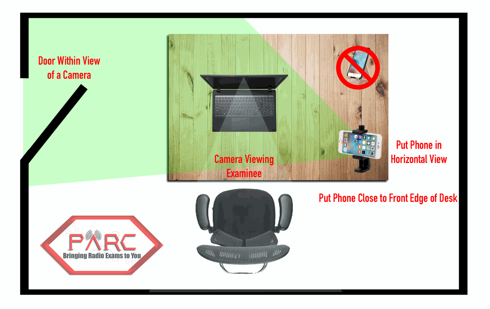

Preparing Your Second Device
Main Content

- When in the Waiting Room, do NOT test screen share or any other functions of Zoom; doing so will result in you being removed from the session!
- Put your phone down and leave your phone alone when we admit you to the exam! No matter what you see on the phone screen, please do not touch it; we will bring it in and put it back out to the waiting room. This shuts off the audio on 90% of phones. Keep your eyes on your computer.
- Remember, do not touch your phone when we bring the device into the session. We will turn off the audio. Keep your attention on your computer. IF bringing your phone in and out of the session does not work, and ONLY then, we will disable the audio using this procedure:
- HOW TO DENY AUDIO ON A PHONE: For an iPhone you click “CANCEL”, for other devices you click “DENY” or “DIAL BY PHONE” or just click on the speaker’s video and not choose any option.
- You must have an Internet-connected cell phone with built-in camera.
- Be sure the cell phone is fully charged or plugged in.
Learn how to reverse the video from “selfie” mode to rear camera view and how to hold the camera in horizontal orientation.


- You will use the camera to scan the room, the computer, and your hands for security compliance, then use the camera to observe you during the session.
Find a way to prop the phone up to see the computers keyboard and monitor from a front & side view for the duration of the exam. See Example Above.
- Download Zoom on both computer and phone and TEST them.
- Join audio on the computer but
not the cell phone. Muting the audio on cell phone or device does not prevent feedback. It is imperative that you practice using your camera and know how to use it. Do not connect audio on the cellular phone! Do not touch your phone when we bring it into the session, we will disable the audio. Keep your attention on the computer. - Turn on video when in the Waiting Room on both your computer and your cellular phone. Turn on the audio and unmute your microphone on the computer only. DO NOT accept audio on your cellular phone. Again, it is VERY IMPORTANT that you decline/deny audio on your cellular phone when in the waiting room or before entering the session if you can. Don't touch your phone when we admit you to the main room; we will bring it in and out to disable the audio and prevent feedback. Keep eyes and hands on your computer and IGNORE your PHONE until we tell you to pick it up; this will help everyone and speed up the process.